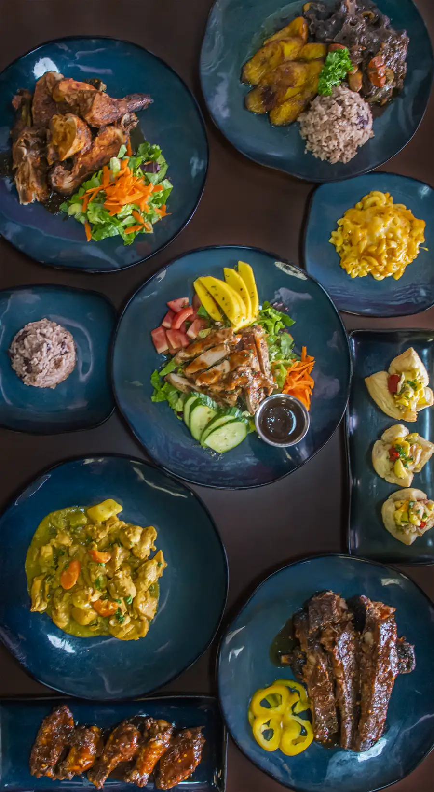

Centennial
7562 S University Blvd Unit C, Centennial, CO 80122.
Mon to Thu 11am to 8pm, Fri and Sat 11am to 9pm, open Sunday.
Scotch bonnet and slow fire, out of Tamara's kitchen. Send your order to the kitchen now, walk in later, and collect it without standing in the line.

Jerk chicken sits overnight in scotch bonnet and pimento, goes on the grill, then gets sauced as it leaves the kitchen. Jerk pork, jerk shrimp and jerk barbecue ribs come off the same grill, and every one is served with two sides.
If you want the heat without the bone, the jerk wings and the jerk chicken salad do the same job in a smaller plate.
Order Off the Grill
Oxtail goes on early and stays on until it gives up the bone. Curry goat is cooked long and low, and brown stew chicken is browned down and finished in its own gravy. Curry chicken is simmered with potato and carrot the way it is at home.
Ackee and salt fish, the national dish of Jamaica, is on the menu every day, and so is escoveitch red snapper, fried whole and dressed with peppers and vinegar.
Order From the Pot
Rice and peas cooked in coconut milk, festival, ripe fried plantain, steamed cabbage and macaroni pie. There is a set of vegan dishes on the menu alongside the meat, and they are marked so you can find them fast.
Patties are baked to order and folded to travel, which makes them the easiest thing to add to a pickup order. Fresh homemade juices are made in house.
Add Sides to a TrayTap to add. The total updates as you go, then you hand the tray straight to your kitchen. Every price is the price you pay at the counter.
One page, both kitchens, every price. PDF, 250KB, made to print or to keep on your phone.
Reggae Pot runs two kitchens in the south Denver metro, one in Centennial and one in Denver. Each takes its own orders and keeps its own menu, so start by choosing the counter you are collecting from.
7562 S University Blvd Unit C, Centennial, CO 80122.
Mon to Thu 11am to 8pm, Fri and Sat 11am to 9pm, open Sunday.

2243 S Monaco St Pkwy #104, Denver, CO 80222.
Mon to Thu 11am to 8pm, Fri and Sat 11am to 9pm, closed Sunday.

Oxtail goes on early and stays on until it gives up the bone. Jerk sits overnight in scotch bonnet and pimento before it ever sees the grill. Nothing is rushed to the counter, which is exactly why ordering ahead is worth it.

Trays of jerk chicken, curry goat, rice and peas and festival for offices, churches and family gatherings. Tell us the headcount and the date and we will work the menu around it, including the vegan dishes so nobody at the table is left out.
Call to Plan CateringThere are two kitchens in the south Denver metro. The Centennial kitchen is at 7562 S University Blvd Unit C, Centennial, CO 80122. The Denver kitchen is at 2243 S Monaco St Pkwy #104, Denver, CO 80222.
Both kitchens open at 11am. Monday to Thursday they close at 8pm, and Friday and Saturday they close at 9pm. The Centennial kitchen is open on Sunday and the Denver kitchen is closed on Sunday.
Yes. Build your tray on this page, then send it to the kitchen you are collecting from. Your order goes in the moment you confirm it, so it is cooked to your pickup time rather than started when you walk in.
The menus are close but not identical, and two dishes cost slightly more at the Denver kitchen. The prices on this page follow whichever counter you have selected, and the difference is marked on the line.
Jerk chicken and oxtail are the two plates ordered most. Jerk chicken is marinated overnight in scotch bonnet and pimento then finished on the grill, and oxtail is stewed down until it gives up the bone. Both come with two sides.
Yes. There is a set of vegan dishes on the menu alongside the meat plates, and the fresh homemade juices are made in house. Vegan items are marked in the menu on this page so you can find them quickly.
Yes. Catering runs across the Denver metro for offices, churches and family gatherings, with trays of jerk chicken, curry goat, rice and peas and festival. Call the Centennial kitchen on (303) 997-5623 to plan it.
It is the national dish of Jamaica: ackee, a soft yellow fruit, cooked down with salted cod, peppers and onion. It is on the Reggae Pot menu every day, and it is one of the traditional dishes the kitchen is known for.